View my work · alitechit.comSenior IT Support Engineer
IT Support & Systems Engineer with 10+ years of experience supporting enterprise environments, troubleshooting complex technical issues, and improving IT operations. Proven ability to manage critical incidents, support executive users, mentor support staff, and enhance system reliability. Experienced with Okta, Google Workspace, Active Directory, and enterprise ticketing systems.
Selected experience most relevant to senior IT support roles
ZoomInfo — Waltham, MA
ZoomInfo — Waltham, MA
Boston College — Newton, MA
Comcast — Chelmsford, MA
Gamer Stop E-Sport Arena — Istanbul, Türkiye
Fatih Sultan Mehmet Vakıf University — Istanbul, Türkiye
Radore Hosting — Istanbul, Türkiye
Mercy College — New York
Computer Science — Bachelor’s Degree
2008 – 2011